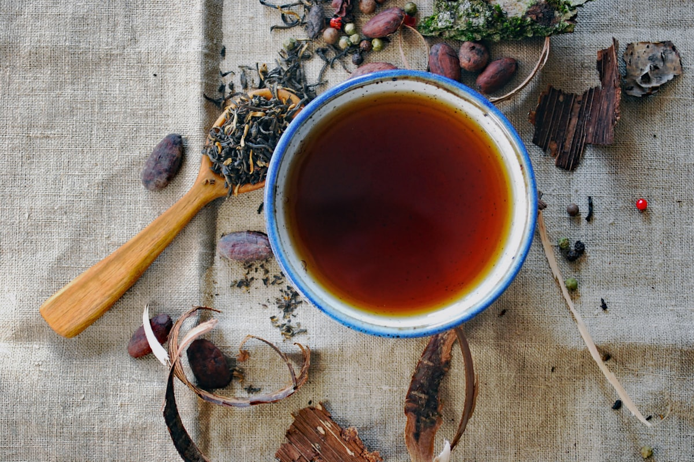

Masala 就是「香料調配」的意思
在印地語和大多數印度語言中，「Masala」字面意思就是「香料的混合」。它不是一個特定的配方，而是一個類別。就像法國料理中的「醬汁」（sauce）可以指上千種不同的做法一樣，印度料理中的「Masala」指的是為了特定用途而混合在一起的任何香料組合。
每個印度家庭都有代代相傳的Masala配方。祖母的葛拉姆馬薩拉可能以豆蔻和肉桂為主，而鄰居的版本則偏重黑胡椒和丁香。沒有所謂「正確的」Masala——調配會根據菜餚、地區、家庭甚至季節而改變。

您應該認識的主要 Masala 種類
葛拉姆馬薩拉（Garam Masala）是全球最知名的香料調配。名字的意思是「溫暖的香料混合」，通常包含豆蔻、肉桂、丁香、黑胡椒、孜然和芫荽。它在烹飪結束時加入，提供芳香的暖意而非尖銳的辣度。每個印度廚房都有自己的葛拉姆馬薩拉配方。
查特馬薩拉（Chaat Masala）是一種酸鹹的調配，主要用作收尾調味。它含有乾芒果粉（Amchur）、黑鹽（Kala Namak）、孜然和乾薑。撒在水果、沙拉和街頭小吃上，增添一種令人上癮的酸鹹風味，這在台灣料理中找不到對應的味道。
坦都里馬薩拉（Tandoori Masala）是鮮豔的紅橙色調配，專門用於醃漬肉類和奶豆腐，然後放入坦都爐（泥土烤爐）中烹製。它結合了紅椒粉、孜然、芫荽、薑、大蒜和胡蘆巴，創造出坦都里料理獨特的煙燻泥土風味。
桑巴爾馬薩拉（Sambar Masala）是南印度的特色調配，專為名為桑巴爾的扁豆蔬菜燉菜設計。它以芫荽籽、乾辣椒、胡蘆巴、芥末籽和咖哩葉為主——創造出與北印度馬薩拉完全不同的風味。
濕 Masala 與乾 Masala
Masala並不總是乾燥的粉末。許多印度菜的起步是製作「濕Masala」或糊狀物，將新鮮的薑、大蒜、洋蔥、番茄和青辣椒一起研磨。這種糊狀物構成了大多數咖哩的基底。乾香料的Masala隨後加入這個濕基底中，兩者一起烹煮，創造出定義印度食物的複雜、層次分明的風味。
這種雙層的方法——濕基底加乾香料調配——正是印度咖哩具有深度的原因。這也是為什麼在家做印度菜需要耐心：Masala需要足夠的時間來正確烹煮。匆忙這個步驟會產生刺鼻、生澀的香料味，而不是好的印度餐廳那種圓潤、融合的風味。

Masala 在巴巴的意義
在台中的巴巴印度料理館，我們現磨自己的Masala調配。我們的葛拉姆馬薩拉、坦都里馬薩拉和咖哩基底都是使用傳統配方在店內製作的。這就是正宗印度料理與預製咖哩醬包的區別：香料調配的新鮮度決定了每道菜的品質。
下次在我們餐廳點提卡馬薩拉或鷹嘴豆馬薩拉時，您就會知道「Masala」不僅僅是菜單上的一個詞——它代表著數百年的香料知識、家族傳統，以及相信正確的香料組合能將簡單的食材轉化為非凡美味的信念。